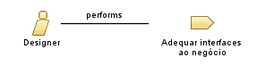

|
| Tem o papel de compreender o negócio do clientecliente, buscando refletir o entedimento no desenvolvimento de interfaces para o sistema de gerenciamento. |
|
Relationships
 |
| Primary Performs |
|
| Modifies |
|
Main Description
| O designer no processo de sistemas de gestao web tem a reponsabilidade de tentar demonstrar na interface do
gerenciador que ele construiu, informações que condizam com o que o cliente espera visualizar e relacionadas ao
négocio do cliente, visando o uso inteligente dos elementos da interface do gerenciador. |
|